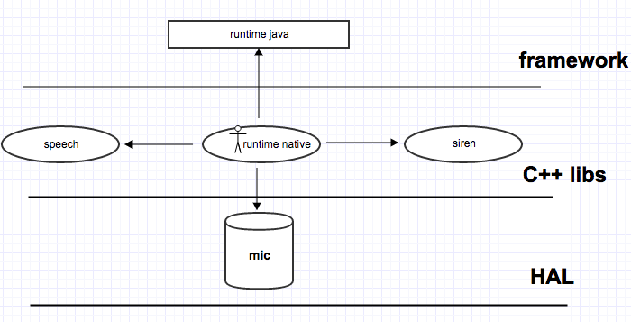

Rokid SDK接入指南
简介
Rokid开放平台SDK包含Siren、Speech、NLP、ASR、TTS几大模块。
- Siren：拾音模块，接收HAL的音频数据，算法处理，滤波；
- TTS：文字转语音；
- Speech和ASR：都是语音转文字，不同的是Speech专门处理Siren的语音事件。
开始
要使用Rokid开放平台的SDK，首先需要下载相关的依赖模块：
这里为大家提供了一个Sample， 其中，
- 增加了一些自己的逻辑
- 用到了Android的Binder机制
- 用到了C++多线程
接下来会从以下9个步骤完整讲述如何为自己的项目部署Rokid开放平台的SDK，
1 目录结构
先来看看它的目录结构：

- device 编译集成相关的mk，与Android device相同
- framework 一个java层service, 处理具体的业务逻辑，接收native service的Binder消息
- hardware mic的驱动文件，给siren提供硬件支持
- src 主要的代码目录，是siren和speech之间的桥梁，可以通过Binder通信


2 编译
目前这些SDK都放在Android根目录，整编需要先make rprotoc，make grpc_cpp_plugin，然后再make -j20(建议写成脚本)。单编先编译Andorid,然后使用mm依次编译：protobuf，grpc，speech，siren，编译后会得到下图这些lib库。siren所有库都是必需的，speech根据需求增减libspeech/libspeech_asr/libspeech_tts/libspeech_nlp.

3 安装mic驱动
mic kernel部分在Linux中已经有了，但HAL层还需要我们自己来完成，我们只需要在/hardware/libhardware/include/hardware下创建一个mic_array.h。
mic_array.h文件的内容如下:
#include <stdint.h>
#include <hardware/hardware.h>
//定义模块名
#define MIC_ARRAY_HARDWARE_MODULE_ID "mic_array"
//硬件模块结构体
struct mic_array_module_t {
struct hw_module_t common;
};
//硬件接口结构体
struct mic_array_device_t {
struct hw_device_t common;
int channels;
int sample_rate;
int bit;
unsigned int frame_cnt;
struct pcm *pcm;
int (*get_stream_buff_size) (struct mic_array_device_t *dev);
int (*start_stream) (struct mic_array_device_t *dev);
int (*stop_stream) (struct mic_array_device_t *dev);
int (*finish_stream) (struct mic_array_device_t * dev);
int (*resume_stream) (struct mic_array_device_t *dev);
int (*read_stream) (struct mic_array_device_t *dev, char *buff, unsigned int frame_cnt);
int (*config_stream) (struct mic_array_device_t *dev, int cmd, char *cmd_buff);
};
这里按照Android硬件抽象层规范的要求，分别定义模块ID、模块结构体以及硬件接口结构体。在硬件接口结构体中， pcm为设备描述符，用来读取音频裸数据，剩下是一些函数指针为该HAL对上层提供的函数接口。
接下来进入到hardware/libhardware/modules目录，新建目录mic_array，并添加mic_array.c文件。这个文件比较长，我们分段来看
#include "mic/mic_array.h"
#define MODULE_NAME "mic_array"
#define MODULE_AUTHOR "jiaqi@rokid.com"
static struct pcm_config pcm_config_in = {
.channels = 8,
.rate = 48000,
.period_size = 1024,
.period_count = 4,
.format = PCM_FORMAT_S32_LE,
};
//pcm缓冲区结构体
static struct amlogic_mic_array_device {
struct mic_array_device_t mic_array;
int pts;
char* buffer;
};
//设备打开和关闭接口
static int mic_array_device_open(const struct hw_module_t* module,
const char* name, struct hw_device_t** device);
static int mic_array_device_close(struct hw_device_t* device);
//设备访问接口
static int mic_array_device_start_stream(struct mic_array_device_t* dev);
static int mic_array_device_stop_stream(struct mic_array_device_t* dev);
static int mic_array_device_finish_stream(struct mic_array_device_t* dev);
static int mic_array_device_read_stream(
struct mic_array_device_t* dev, char* buff, unsigned int frame_cnt);
static int mic_array_device_config_stream(
struct mic_array_device_t* dev, int cmd, char* cmd_buff);
static int mic_array_device_get_stream_buff_size(
struct mic_array_device_t* dev);
static int mic_array_device_resume_stream(struct mic_array_device_t* dev);
//模块方法表
static struct hw_module_methods_t mic_array_module_methods = {
.open = mic_array_device_open,
};
//模块实例变量
struct mic_array_module_t HAL_MODULE_INFO_SYM = {
.common = {
.tag = HARDWARE_MODULE_TAG,
.version_major = 1,
.version_minor = 0,
.id = MIC_ARRAY_HARDWARE_MODULE_ID,
.name = MODULE_NAME,
.author = MODULE_AUTHOR,
.methods = &mic_array_module_methods,
},
};
首先是包含相关头文件和定义相关结构，这里，实例变量名必须为HAL_MODULE_INFO_SYM，tag也必须为HARDWARE_MODULE_TAG，这是Android硬件抽象层规范规定的
static int mic_array_device_open(const struct hw_module_t* module,
const char* name, struct hw_device_t** device)
{
int i = 0;
struct amlogic_mic_array_device* am_dev = NULL;
struct mic_array_device_t* dev = NULL;
am_dev = (struct amlogic_mic_array_device*)malloc(
sizeof(struct amlogic_mic_array_device));
dev = (struct mic_array_device_t*)am_dev;
if (!am_dev) {
ALOGE("MIC_ARRAY: FAILED TO ALLOC SPACE");
return -1;
}
memset(am_dev, 0, sizeof(struct amlogic_mic_array_device));
dev->common.tag = HARDWARE_DEVICE_TAG;
dev->common.version = 0;
dev->common.module = (hw_module_t*)module;
//函数指针
dev->common.close = mic_array_device_close;
dev->start_stream = mic_array_device_start_stream;
. . . . . .
// use pcm_config_in instead
dev->channels = pcm_config_in.channels;
dev->sample_rate = pcm_config_in.rate;
dev->bit = pcm_format_to_bits(pcm_config_in.format);
dev->frame_cnt = pcm_config_in.period_size * pcm_config_in.period_count
* pcm_config_in.channels * (pcm_format_to_bits(pcm_config_in.format) >> 3);
ALOGI("alloc frame buffer size %d", dev->frame_cnt);
dev->pcm = NULL;
am_dev->pts = 0;
am_dev->buffer = (char*)malloc(dev->frame_cnt);
*device = &(dev->common);
return 0;
}
首先在堆区创建了一个amlogic_mic_array_device，并强转成mic_array_device_t（这是可以强转成功的，想想你定义了一个数组，数组名其实就是第一个元素的指针，struct同理），接着为mic_array_device_t赋值:函数指针，channel, sample_rate, bit ... 。这样我们在上层能过open函数就可以得到这个结构体mic_array_device_t。
接下来就是实现这些函数指针了
static int mic_array_device_start_stream(struct mic_array_device_t* dev)
{
struct mic_array_device_t* mic_array_device
= (struct mic_array_device_t*)dev;
struct pcm* pcm = NULL;
//得到一个pcm
pcm = pcm_open(PCM_CARD, PCM_DEVICE, PCM_IN, &pcm_config_in);
mic_array_device->pcm = pcm;
return 0;
}
static int mic_array_device_read_stream(
struct mic_array_device_t* dev, char* buff, unsigned int frame_cnt)
{
struct pcm* pcm = dev->pcm;
struct amlogic_mic_array_device* am_dev
= (struct amlogic_mic_array_device*)dev;
char *target = NULL;
int ret = 0;
int left = 0;
int size = dev->frame_cnt;
if (size <= 0) {
ALOGE("frame cnt lt 0");
return -1;
}
if (buff == NULL) {
ALOGE("null buffer");
return -1;
}
if (frame_cnt >= size) {
int cnt = frame_cnt / size;
int i;
left = frame_cnt % size;
for (i = 0; i < cnt; i++) {
if ((ret = read_frame(dev, buff + i * frame_cnt)) != 0) {
ALOGE("read frame return %d, pcm read error", ret);
resetBuffer(am_dev);
return ret;
}
}
if (left != 0) {
if ((ret = read_frame(dev, am_dev->buffer)) != 0) {
ALOGE("read frame return %d, pcm read error", ret);
resetBuffer(am_dev);
return ret;
}
}
target = buff + cnt * frame_cnt;
} else {
target = buff;
left = frame_cnt;
}
if ((ret = read_left_frame(am_dev, buff, left)) != 0) {
ALOGE("read frame return %d, pcm read error", ret);
resetBuffer(am_dev);
return ret;
}
return ret;
}
mic_array_device_start_stream函数中通过pcm_open得到一个pcm。当调用mic_array_device_read_stream的时候，先把dev强转回amlogic_mic_array_device，再来算出cnt值（要根据pcm的建议值来read一次数据）, 有多余的数据，保存起来下次再用，这就是amlogic_mic_array_device的作用。
继续在mic_array目录下新建Android.mk文件
LOCAL_PATH := $(call my-dir)
include $(CLEAR_VARS)
LOCAL_SRC_FILES := mic_array.c
LOCAL_MODULE_PATH := $(TARGET_OUT_SHARED_LIBRARIES)/hw
LOCAL_MODULE := mic_array.$(TARGET_DEVICE)
LOCAL_MODULE_TAGS := optional
LOCAL_C_INCLUDES += \
hardware/libhardware \
rokid-openvoice-sample-android/hardware/include \
external/tinyalsa/include
LOCAL_SHARED_LIBRARIES := liblog libcutils libtinyalsa
LOCAL_MODULE_TARGET_ARCH := arm
include $(BUILD_SHARED_LIBRARY)
4 初始化
现在我们只需要使用Android的标准函数hw_get_module()查找mic设备， 通过传入的hw_module_t结构体指针，调用其中的open函数打开设备。如果打开成功，结果返回0
rokid-openvoice-sample-android/src/VoiceEngine.cpp
struct mic_array_device_t *mic_array_device;
bool VoiceEngine::init(RuntimeService *runtime)
{
this->runtime_service = runtime;
mic_array_module_t *module;
if(hw_get_module(MIC_ARRAY_HARDWARE_MODULE_ID, (const struct hw_module_t **)&module) != 0){
ALOGV("cannot find mic_array");
return false;
}
if(module->common->methods->open(module, MIC_ARRAY_HARDWARE_MODULE_ID,
(struct hw_device_t **)mic_array_device) != 0){
ALOGE("open mic_array failed");
return false;
}
ALOGI ("open mic array done");
siren_t _siren = init_siren(runtime, NULL, &siren_input);
//设置回调接口
start_siren_process_stream(_siren, &siren_callback);
return true;
}
siren_input_if_t siren_input = {
init_input,
release_input,
start_input,
stop_input,
read_input,
on_err_input
};
siren_proc_callback_t siren_callback = {
voice_event_callback
};
siren_input_if_t里面都是一些函数指针，定义在blacksiren/include/siren.h中。这些函数都对的mic驱动应ice_t相关函数。siren会掉用这些函由来我们来调用mic_array_d。
5 处理siren事件
rokid-openvoice-sample-android/src/RuntimeService.cpp
void siren::voice_event_callback(void *token, int length, siren_event_t event,
void* buff, int has_sl,
int has_voice, double sl_degree,
double energy, double threshold,
int has_voiceprint){
ALOGV("voice_event_callback >>> token : %x, has_voice : %d, len : %d",token, has_voice, length);
RuntimeService *runtime_service = (RuntimeService*)token;
if(runtime_service == NULL) return;
pthread_mutex_lock(&runtime_service->siren_mutex);
//add to siren_queue
RuntimeService::VoiceMessage *voice_msg = new RuntimeService::VoiceMessage();
char *_cache = NULL;
if(has_voice > 0){
assert(length >= 0);
_cache = new char[length];
memcpy(_cache, buff, length);
voice_msg->buff = _cache;
}
. . . . . .
runtime_service->voice_queue.push_back(voice_msg);
pthread_cond_signal(&runtime_service->siren_cond);
pthread_mutex_unlock(&runtime_service->siren_mutex);
}
如果siren开始拾音，就会回掉voice_event_callback，这里我的做法是把数据拷贝一份，把这个msg放到voice_queue链表的末尾，然后唤醒另外一个线程去做。当然这个还有待优化，没必要拷贝一次数据。
void* siren_thread_loop(void* arg){
ALOGV("thread join !!");
RuntimeService *runtime_service = (RuntimeService*)arg;
int id = -1;
bool err = false;;
runtime_service->_speech = new_speech();
if (!runtime_service->_speech->prepare()) {
ALOGE("=========prepare failed===============");
return NULL;
}
runtime_service->_speech->config("codec", "opu");
pthread_create(&runtime_service->speech_thread, NULL, speech_thread_loop, runtime_service);
for(;;){
pthread_mutex_lock(&runtime_service->siren_mutex);
while(runtime_service->voice_queue.empty()){
pthread_cond_wait(&runtime_service->siren_cond, &runtime_service->siren_mutex);
}
const RuntimeService::VoiceMessage *voice_msg = runtime_service->voice_queue.front();
ALOGV("event : -------------------------%d----", voice_msg->event);
switch(voice_msg->event){
case SIREN_EVENT_WAKE_CMD:
ALOGV("voice event >>> wake_cmd");
runtime_service->current_status = SIREN_STATE_AWAKE;
break;
case SIREN_EVENT_WAKE_NOCMD:
case SIREN_EVENT_SLEEP:
ALOGV("voice event >>> wake_nocmd or sleep");
runtime_service->current_status = SIREN_STATE_SLEEP;
break;
case SIREN_EVENT_VAD_START:
case SIREN_EVENT_WAKE_VAD_START:
runtime_service->current_status = SIREN_STATE_AWAKE;
id = runtime_service->_speech->start_voice();
ALOGV("voice event >> start id : <<%d>> err : <<%d>>", id, err);
break;
case SIREN_EVENT_VAD_DATA:
case SIREN_EVENT_WAKE_VAD_DATA:
if (id > 0 && voice_msg->has_voice > 0) {
runtime_service->_speech->put_voice(id, (uint8_t *)voice_msg->buff, voice_msg->length);
}
break;
case SIREN_EVENT_VAD_END:
case SIREN_EVENT_WAKE_VAD_END:
ALOGV("voice event : end id >>> %d ",id);
if(id > 0) {
case SIREN_EVENT_VAD_CANCEL:
case SIREN_EVENT_WAKE_CANCEL:
if(id > 0)
runtime_service->_speech->cancel(id);
ALOGI("voice event : cancel id >>> %d", id);
break;
case SIREN_EVENT_WAKE_PRE:
ALOGV("vicee event >>> prepare");
break;
}
. . . . . .
pthread_mutex_unlock(&runtime_service->siren_mutex);
}
runtime_service->_speech->release();
return NULL;
}
这个线程起来的时候我们创建了Speech，调用它的prepare，config函数。注意：一定要在连网的情况下开始调试，否则speech的prepare()方法会一直堵塞，因为prepare的时候speech会和服务端认证，grpc会一直block。config设置音频数据的类型（opu，pcm）。在线程被唤醒后，从voice_queue链表头部获取msg，根据msg的siren_event_t事件来处理具体的逻辑。每段语音开始之前，都会收到SIREN_EVENT_WAKE_PRE，SIREN_EVENT_VAD_START事件，语音结束会有SIREN_EVENT_VAD_END，ENT_VAD_CANCEL事件，语音传递中有SIREN_EVENT_VAD_DATA事件。
- SIREN_EVENT_WAKE_PRE，siren准备开始工作，可以根据自己的业务做些准备工作
- SIREN_EVENT_VAD_STARE, siren开始拾音，这里需要创建Speech对象初始化，并掉用它的poll等待消息(这是一个堵塞函数，建议在另外一个线程调用)
- SIREN_EVENT_VAD_DATA，siren的处理语音结果事件，直接传给speech即可
- SIREN_EVENT_VAD_END，音频输入结束的事件
- ENT_VAD_CANCEL
6 处理speech语音识别结果
void* speech_thread_loop(void* arg){
RuntimeService *runtime_service = (RuntimeService*)arg;
json_object *_json_obj = NULL;
for(;;){
SpeechResult sr;
int32_t flag = runtime_service->_speech->poll(sr);
if (flag < 0)
break;
. . . . . .
if(flag == 0 && sr.nlp != ""){
_json_obj = json_tokener_parse(sr.nlp.c_str());
json_object_object_add(_json_obj, "asr", json_object_new_string(sr.asr.c_str()));
json_object_object_add(_json_obj, "action", json_object_new_string(sr.action.c_str()));
ALOGV("-------------------------------------------------------------------------");
ALOGV("%s", json_object_to_json_string(_json_obj));
ALOGV("-------------------------------------------------------------------------");
if(runtime_service->_binder != NULL){
Parcel data, reply;
data.writeInterfaceToken(String16("rokid.os.IRuntimeService"));
data.writeString16(String16(json_object_to_json_string(_json_obj)));
runtime_service->_binder->transact(IBinder::FIRST_CALL_TRANSACTION + 0, data, &reply);
reply.readExceptionCode();
}else{
ALOGI("java runtime is null , Waiting for it to initialize");
}
delete _json_obj;
_json_obj = NULL;
}
}
return NULL;
}
这个线程一直在poll等待消息，有结果返回就把它打包成json，并通过Binder传给java层。
7 编写mk
LOCAL_PATH := $(call my-dir)
include $(CLEAR_VARS)
LOCAL_SRC_FILES := \
src/IRuntimeService.cpp \
src/RuntimeService.cpp \
src/VoiceEngine.cpp \
src/runtime_main.cpp
LOCAL_SHARED_LIBRARIES := \
libbinder \
liblog \
libhardware \
libbsiren \
libjsonc \
libutils \
libgpr \
libgrpc \
libgrpc++ \
libprotobuf-rokid-cpp-lite \
libprotobuf-rokid-cpp-full \
libspeech_common \
libspeech \
libspeech_nlp \
libspeech_tts \
libspeech_asr
SPEECH_DIR = speech/src
SPEECH_DIR_DEP = speech/external
LOCAL_C_INCLUDES += \
$(LOCAL_PATH)/include \
$(LOCAL_PATH)/hardware/include \
rokid-blacksiren/thirdparty/libjsonc/include \
speech/include
IGNORED_WARNINGS := -Wno-sign-compare -Wno-unused-parameter -Wno-sign-promo -Wno-error=return-type -Wno-error=non-virtual-dtor
LOCAL_MODULE := runtime
LOCAL_ARM_MODE := arm
LOCAL_CPPFLAGS := -DCURRENT_ANDROID_PLATFORM_SDK_VERSION=$(PLATFORM_SDK_VERSION) $(IGNORED_WARNINGS) -DGOOGLE_PROTOBUF_NO_RTTI
LOCAL_MODULE_TAGS := optional
LOCAL_MODULE_TARGET_ARCH := arm
include $(BUILD_EXECUTABLE)
- LOCAL_PATH 调用宏
call my-dir获取当前路径 - include $(CLEAR_VARS) 清除一些变量
- LOCAL_SRC_FILES 添加需要编译的cpp文件
- LOCAL_SHARED_LIBRARIES 添加库依赖（SDK编译生成的都是动态库）
- SPEECH_DIR/SPEECH_DIR_DEP是自定义变量，和shell相似
- LOCAL_C_INCLUDES 添加自己的和依赖的.h头文件
- IGNORED_WARNINGS 自定义变量
- LOCAL_CPPFLAGS 编译控制选项
- LOCAL_MODULE 模块名
- include $(BUILD_EXECUTABLE) 编译成可执行文件
8 权限问题
Android上也引入了selinux，这是美国国安局专门为linux设计的一套安全机制。它有三种工作模式，在Android4.2以前，它一直处于Permission模式，之后便工作在enforcing模式，这就需要我们根据selinux的规范添加相应的.te文件，建议在开发阶段设回Permission
system/core/init/init.cpp
static selinux_enforcing_status selinux_status_from_cmdline() {
selinux_enforcing_status status = SELINUX_ENFORCING;
修改为
selinux_enforcing_status status = SELINUX_PERMISSIVE;
. . . . . .
}
9 运行
可以选择手动运行这个程序，先把这些依赖库push到/system/libs/下，然后把runtime这个可执行文件放到/system/bin/下，之后在adb shell下敲runtime就可以了。也可以加到init.rc下，开机就启动，具体操作如下：
device/xxxx/common/products/mbox/init.xxxx.rc（每个人目录可能不一样）
service runtime /system/bin/runtime
class main
user root
group root
runtime起来以后会看到如下信息：
01-01 00:00:08.939 3743 3743 I VoiceEngine: open mic array done
01-01 00:00:10.788 3743 3743 V VoiceEngine: init input ..
01-01 00:00:10.788 3743 3743 I VoiceEngine: =====-------------=============f5889100
01-01 00:00:10.788 3743 3743 V RuntimeService: current_status >> 2, 2
01-01 00:00:10.789 3743 3772 V VoiceEngine: siren state is : 2
01-01 00:00:10.801 3743 3878 V RuntimeService: thread join !!
01-01 00:00:35.992 4083 4083 E RuntimeService: RuntimeService created android.app.ContextImpl@76a209a
01-01 00:00:35.992 4083 4083 E RuntimeService: mContext android.app.ContextImpl@76a209a
01-01 00:00:36.057 4083 4083 E RuntimeService: service conneted _thiz : android.os.BinderProxy@65568b5
01-01 00:00:36.058 3743 3743 V RuntimeService: add_binder success f5889080
01-01 00:00:37.417 4083 4083 E RuntimeService: service conneted _binder : com.rokid.server.RuntimeService@eed3eb2
03-30 12:12:53.880 3743 3878 V RuntimeService: event : -------------------------107----
03-30 12:12:53.880 3743 3878 V RuntimeService: vicee event >>> prepare
03-30 12:12:53.880 3743 3878 V RuntimeService: event : -------------------------100----
03-30 12:12:53.880 3743 3878 V RuntimeService: voice event >> start id : <<1>> err : <<0>>
03-30 12:12:53.880 3743 3878 V RuntimeService: event : -------------------------101----
03-30 12:12:53.881 3743 5050 V RuntimeService: result : asr >> 1
03-30 12:12:53.881 3743 5050 V RuntimeService: result : nlp >>
03-30 12:12:53.881 3743 5050 V RuntimeService: result : action >>
03-30 12:12:53.975 3743 3772 V VoiceEngine: voice_event_callback >>> token : f5889100, has_voice : 1, len : 1662
03-30 12:12:53.975 3743 3878 V RuntimeService: event : -------------------------101----
03-30 12:12:53.993 3743 3772 V VoiceEngine: voice_event_callback >>> token : f5889100, has_voice : 1, len : 147
03-30 12:12:53.993 3743 3878 V RuntimeService: event : -------------------------101----
03-30 12:12:54.019 3743 3772 V VoiceEngine: voice_event_callback >>> token : f5889100, has_voice : 1, len : 113
03-30 12:12:54.020 3743 3878 V RuntimeService: event : -------------------------101----
03-30 12:12:54.075 3743 3772 V VoiceEngine: voice_event_callback >>> token : f5889100, has_voice : 1, len : 132
03-30 12:12:54.075 3743 3878 V RuntimeService: event : -------------------------101----
03-30 12:12:54.101 3743 3772 V VoiceEngine: voice_event_callback >>> token : 03-30 12:12:54.226 3743 3878 V RuntimeService: event : -------------------------101----
03-30 12:12:54.275 3743 3772 V VoiceEngine: voice_event_callback >>> token : f5889100, has_voice : 1, len : 138
03-30 12:12:54.275 3743 3878 V RuntimeService: event : -------------------------101----
03-30 12:12:54.298 3743 3772 V VoiceEngine: voice_event_callback >>> token : f5889100, has_voice : 1, len : 132
03-30 12:12:54.299 3743 3878 V RuntimeService: event : -------------------------101----
03-30 12:12:54.316 3743 3772 V VoiceEngine: voice_event_callback >>> token : f5889100, has_voice : 1, len : 132
03-30 12:12:54.316 3743 3878 V RuntimeService: event : -------------------------101----
03-30 12:12:54.365 3743 3772 V VoiceEngine: voice_event_callback >>> token : f5889100, has_voice : 0, len : 0
03-30 12:12:54.365 3743 3878 V RuntimeService: event : -------------------------109----
03-30 12:12:54.365 3743 3878 V RuntimeService: voice event >>> wake_cmd
03-30 12:12:54.371 3743 3772 V VoiceEngine: voice_event_callback >>> token : f5889100, has_voice : 1, len : 59
03-30 12:12:54.372 3743 3878 V RuntimeService: event : -------------------------101----
03-30 12:12:54.372 3743 3772 V VoiceEngine: voice_event_callback >>> token : f5889100, has_voice : 0, len : 0
03-30 12:12:54.372 3743 3878 V RuntimeService: event : -------------------------102----
03-30 12:12:54.372 3743 3878 V RuntimeService: voice event : end id >>> 1
03-30 12:12:54.372 3743 3772 V VoiceEngine: voice_event_callback >>> token : f5889100, has_voice : 1, len : 4781
03-30 12:12:54.372 3743 3878 V RuntimeService: event : -------------------------114----
03-30 12:12:54.676 3743 5050 V RuntimeService: result : asr >> 若琪你好 0
03-30 12:12:54.676 3743 5050 V RuntimeService: result : nlp >>
03-30 12:12:54.676 3743 5050 V RuntimeService: result : action >>
03-30 12:12:54.708 3743 5050 V RuntimeService: result : asr >> 若琪你好 0
03-30 12:12:54.708 3743 5050 V RuntimeService: result : nlp >> {"cloud":true,"confidence":1,"domain":"com.rokid.system.chat","intent":"chat","posEnd":0,"posStart":0,"slots":{"asr":"若琪你好","emo":"smile","intent_type":"chat","tts":"你好"}}
03-30 12:12:54.708 3743 5050 V RuntimeService: result : action >> {"response":{"action":{"shoudEndSession":true,"type":"NORMAL","version":"2.0.0","voice":{"behaviour":"APPEND","item":{"tts":"你好"},"needEventCallback":false}},"domain":"com.rokid.system.chat","resType":"INTENT","shot":"CUT"},"version":"2.0.0"}
03-30 12:12:54.709 3743 5050 V RuntimeService: ------------------------------------------------
03-30 12:12:54.709 3743 5050 V RuntimeService: { "nlp": "{\"cloud\":true,\"confidence\":1,\"domain\":\"com.rokid.system.chat\",\"intent\":\"chat\",\"posEnd\":0,\"posStart\":0,\"slots\":{\"asr\":\"若琪你好\",\"emo\":\"smile\",\"intent_type\":\"chat\",\"tts\":\"你好\"}}", "asr": "若琪你好", "action": "{\"response\":{\"action\":{\"shoudEndSession\":true,\"type\":\"NORMAL\",\"version\":\"2.0.0\",\"voice\":{\"behaviour\":\"APPEND\",\"item\":{\"tts\":\"你好\"},\"needEventCallback\":false}},\"domain\":\"com.rokid.system.chat\",\"resType\":\"INTENT\",\"shot\":\"CUT\"},\"version\":\"2.0.0\"}" }
03-30 12:12:54.709 3743 5050 V RuntimeService: ------------------------------------------------